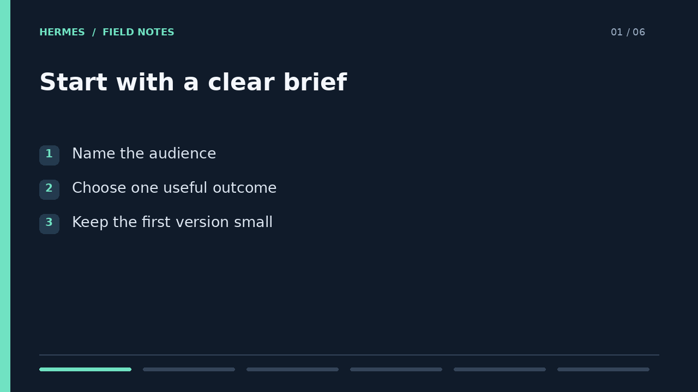
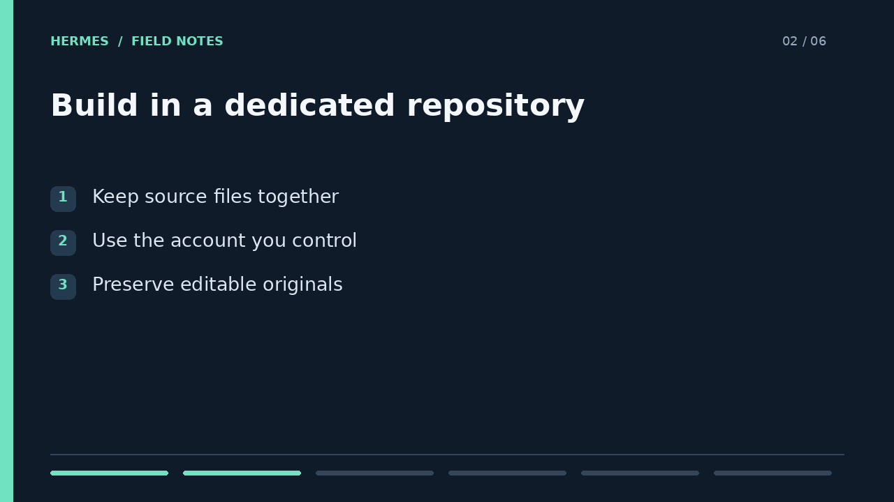
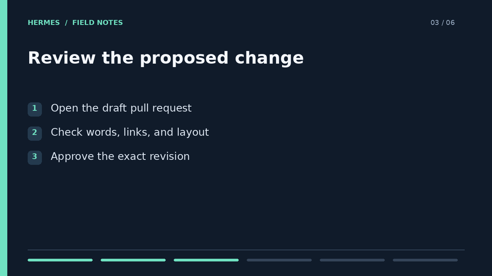
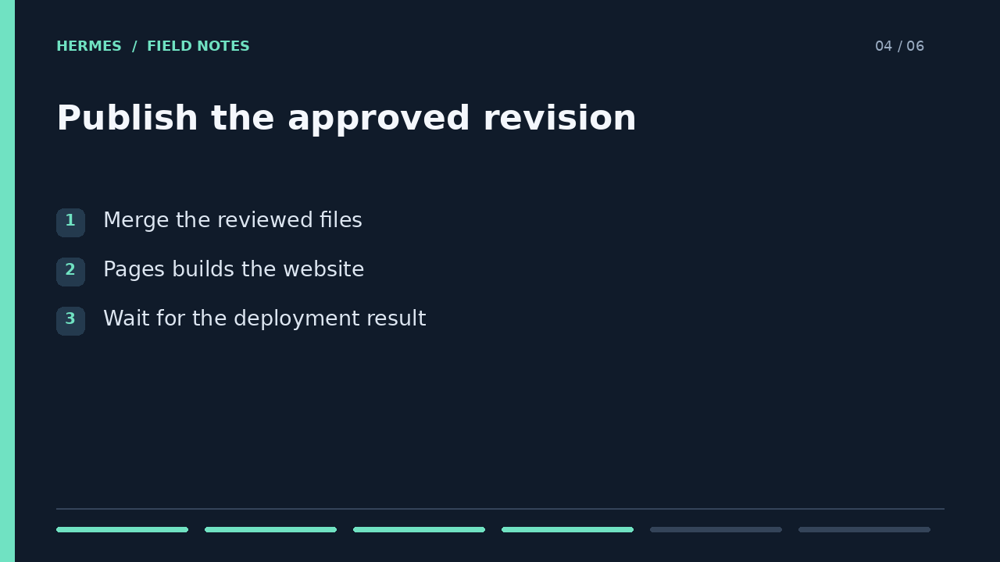
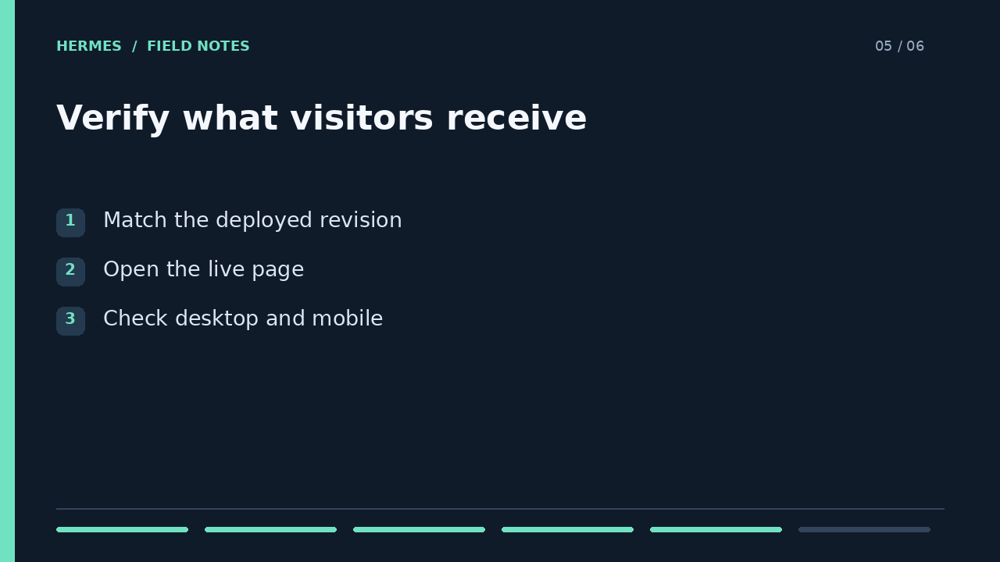
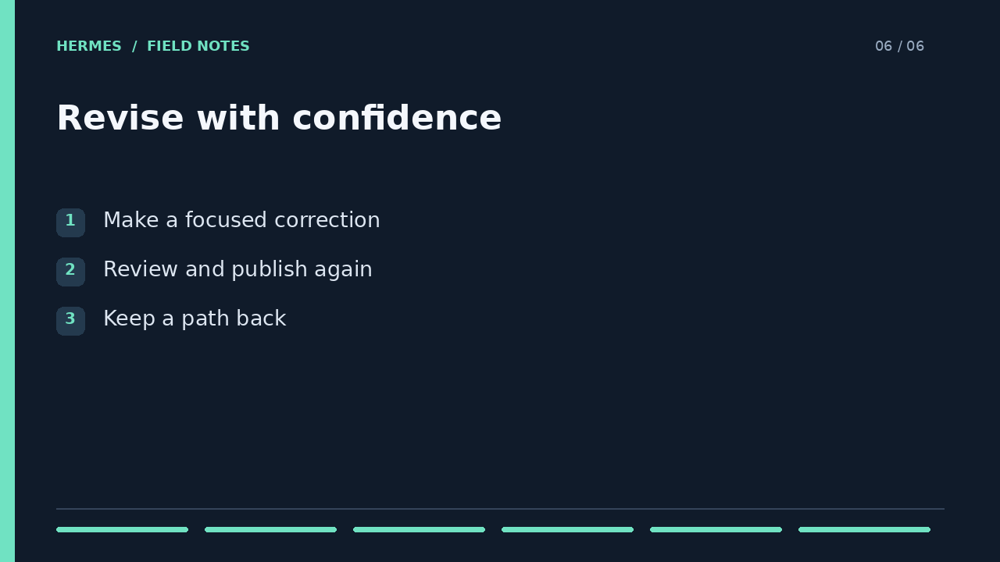

FIELD NOTES
A practical guide from idea to published result
Hermes / Common DevOps | Demonstration
A website begins with a clear brief. Tell Hermes who the page is for, what it should explain, and what visitors should do next. A small first version is easier to review.

Hermes prepares the page and its assets in a dedicated repository. The source stays editable, and each change becomes part of a recorded history. Demonstration material contains no private documents.

Before publication, Hermes opens a draft pull request. Review the wording, links, and layout. Approval applies to the exact revision, so later changes must return for review.

Once approved, the change is merged. GitHub Pages builds the website from the main branch. A successful merge starts publication, but does not prove that the new page is live.

Verification connects the deployment to the reviewed revision. Open the live page, check its contents, and test its links and layout on desktop and mobile. Save that evidence with the release.

A correction follows the same path: edit, review, approve, publish, and verify. Earlier revisions remain available, so a deliberate revert can restore the previous website without rebuilding it from memory.

https://docs.github.com/en/pages/getting-started-with-github-pages/configuring-a-publishing-source-for-your-github-pages-site